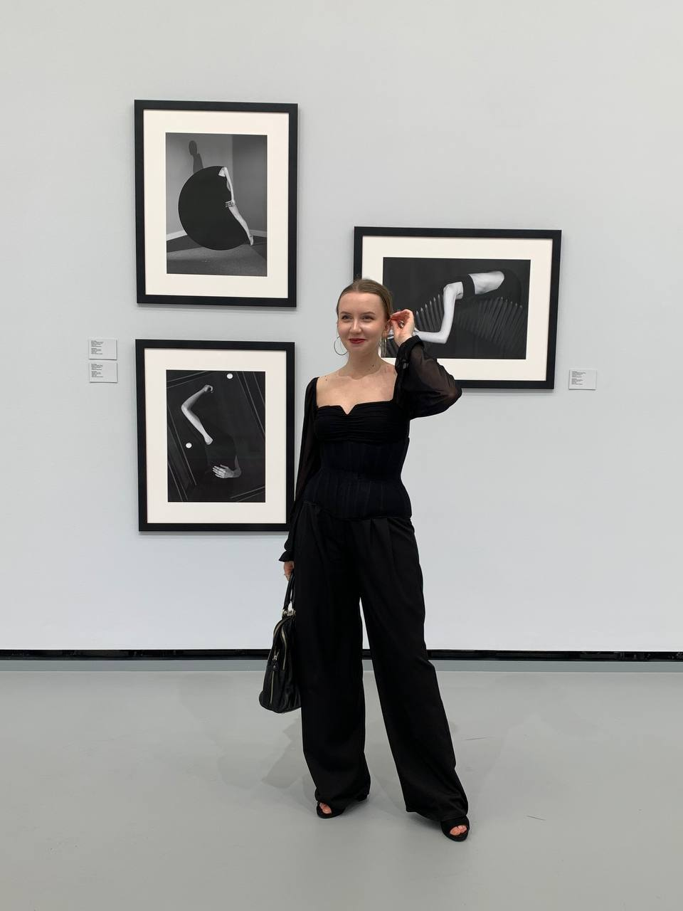

I have been passionate about design for over five years and have more than three years of professional experience. I began with graphic design, earned a Bachelor’s degree in Graphic Design, and completed additional courses to expand my knowledge across different design disciplines.
Background
Professional practiceGraphic & digital design3+ years
Design journeyLearning, creating & exploring5+ years
Bachelor’s degreeGraphic DesignCompleted
Additional educationCourses across design disciplinesOngoing